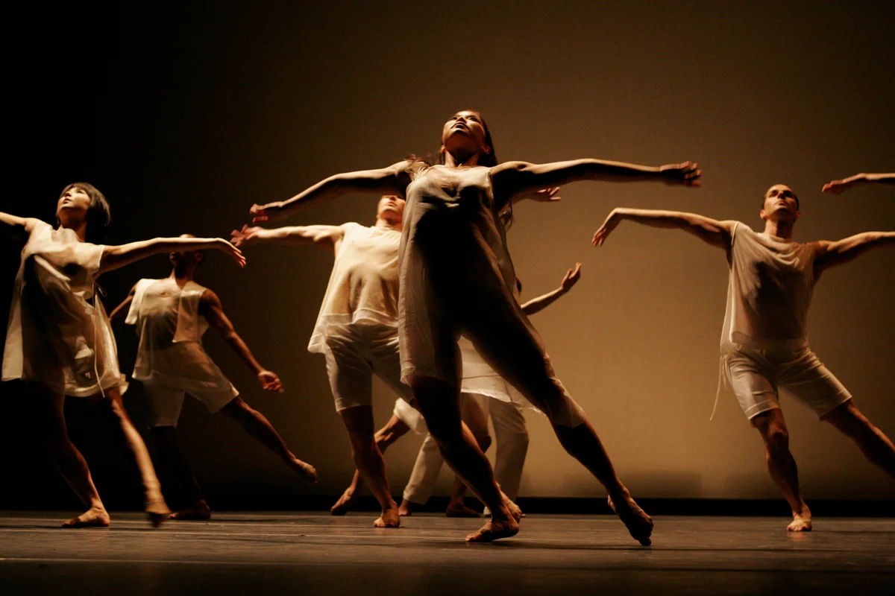

Dancing is what you feel with your body, soul and pain.Dance is an amazing world, once you get into it, you will feel your freedom, strengthen your spirit and relax from the worldly bustle. Plunging into its unknown depths, each person reveals new opportunities and talents that were unthinkable not so long ago.
Dance allows you to throw out unrealized emotions, freed from which, a person is filled with light and pure energy of joy and satisfaction. Learn to dance beautifully and with a soul, it means to get rid of internal tightness and complexes.
Modern parents increasingly prefer their children to be trained in dance. This allows the child to become disciplined and fully developed. And adults themselves, being in search of where to pour out their energy, go to dance classes in Kiev or in any other city.